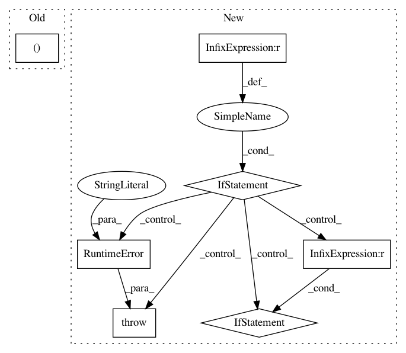

0cd42478586c9cb1febb6b76eea068aac8869a1e,sacred/ingredient.py,Ingredient,__init__,#Ingredient#Any#Any#Any#Any#,38
Before Change
mainfile_name = _caller_globals.get("__file__", ".")
self.base_dir = os.path.dirname(os.path.abspath(mainfile_name))
self.doc = _caller_globals.get("__doc__", "")
self.mainfile, self.sources, self.dependencies = \
gather_sources_and_dependencies(_caller_globals)
if self.mainfile is None and not interactive:
raise RuntimeError("Defining an experiment in interactive mode! "
After Change
if self.mainfile is None and not interactive:
raise RuntimeError("Defining an experiment in interactive mode! "
"The sourcecode cannot be stored and the "
"experiment won"t be reproducible. If you still"
" want to run it pass interactive=True")
// =========================== Decorators ==================================
@optional_kwargs_decorator
def capture(self, function=None, prefix=None):
Decorator to turn a function into a captured function.
The missing arguments of captured functions are automatically filled
from the configuration if possible.
See :ref:`captured_functions` for more information.
If a ``prefix`` is specified, the search for suitable
entries is performed in the corresponding subtree of the configuration.
if function in self.captured_functions:
return function
In pattern: SUPERPATTERN
Frequency: 3
Non-data size: 7
Instances
Project Name: IDSIA/sacred
Commit Name: 0cd42478586c9cb1febb6b76eea068aac8869a1e
Time: 2018-01-24
Author: dismaldenizen@gmail.com
File Name: sacred/ingredient.py
Class Name: Ingredient
Method Name: __init__
Project Name: cornellius-gp/gpytorch
Commit Name: 9c526695805c9639896b31364958d0e77bdeba62
Time: 2018-11-14
Author: gardner.jake@gmail.com
File Name: gpytorch/likelihoods/multitask_gaussian_likelihood.py
Class Name: MultitaskGaussianLikelihood
Method Name: __init__
Project Name: rlworkgroup/garage
Commit Name: b876bf5c3f1a7eaa3d62f8c0b555e1f569eeb066
Time: 2019-03-08
Author: ahtsans@gmail.com
File Name: tests/fixtures/envs/dummy/dummy_discrete_pixel_env.py
Class Name: DummyDiscretePixelEnv
Method Name: step